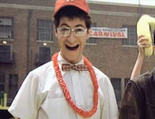

Michael is the author of Staying Married in a Degenerate Age. Follow him on Twitter or Facebook. You can read more of his writing at Honor and Daring.


There are lots of different groups that have a visceral hatred of Trump. Here are a few of them.

Let’s face it. Humans, like other mammals, have a pecking order. Everyone knows that sometimes a person is “out of their league” when it comes to romance. Although every woman wants to be married to an alpha male, alphas are by definition scarce. So most women know they will have to settle for a beta or a gamma if they want to get married.
Everything about Trump triggers these women. He is everything that they want but know they cannot have. He is tall, fabulously wealthy, and even at 70, still pretty handsome. He’s a man’s man. Even though he has an Ivy League education, he can converse comfortably with plumbers and construction workers. He’s virtually fearless and he’s knocked off 16 of the GOP’s best candidates while fighting an unfriendly media.
What is worse is that Trump is married to a gorgeous model who is 24 years younger than him. In other cultures, a 24-year age difference is not scandalous, but it is in the SJW-controlled United States. This is enormously triggering to dowdy women because they know in their hearts that even if they were able to marry an alpha, he would eventually leave them for a younger, more beautiful woman.
Trump’s entire family is an affront to these women. His daughter Ivanka is a reminder that a woman does not have to be fat, even after they have children. And his handsome sons are painful reminders to a dowdy woman of what her children would have looked like if she had been able to score an alpha.
What recourse do these women have? The best revenge in the world: Trump’s opponent is a fellow dowdy woman. That’s why they will support her even though they know she is corrupt.

My wife and I were in a wedding party a couple of years ago. At the rehearsal dinner, another woman in the wedding party—the overweight, late-30s girlfriend of one of the groomsmen—dismissively called the bride and groom and my wife and me “cool kids.” High school kids divide their friends into cool and uncool, but adults typically do not. Why did this woman persist to view the world with a high school mindset?
The answer lies in this woman’s background. While she was in high school, she felt left out because she was overweight. She adopted the identity of being a nerd in opposition to her more popular peers as a protective mechanism. For her, being a nerd means that you are intelligent, sensitive, genuine, and creative. Non-nerds, on the other hand, are superficial, dull, mean, and phony.
Smart people know that what they were in high school does not set an unalterable course for their future. The jock can become a successful business man. The introverted nerd can become a highly successful motivational speaker. But others think that adult life is simply high school on a grander scale. For these people, being branded uncool in high school consigns them to a lifetime of unpopular. Unfortunately, it becomes a self-fulfilling prophecy.

Guess which one is more likely to appeal to people who self-identify as nerds?
Nerds hate Trump because he is the very epitome of the cool kid. As a young man, Trump was fit, handsome, wealthy, and popular. He dated tons of beautiful women. Like the cool kids in high school, Trump is able to destroy his opponents by calling them names as he did when he said Rubio was a “choker.” His brusque manner is more of an indication that he is an insensitive cool kid. Therefore, most nerds will vote for Hillary who better fits the nerd stereotype.
Neocon and inveterate Trump hater Max Boot
Neoconservatism is a political ideology that developed during the 1960s among certain Democrats. Many of the first neocons were Trotskyites who were opposing Stalinism—that is they were a milder form of communists. One of the founders of the movement, Irving Kristol, described a neocon as “a liberal who has been mugged by reality.” As liberals, neocons favor a liberal domestic policy. Most of them are social liberals who favor gay marriage and abortion. What sets them apart from other liberals is their foreign policy—neocons favor aggressive interventions to foster democracy.
It is no secret that most neocons are Jews. This is so true that if you say “neocon” on social media, many people will read “Jew” whether you intended that or not. Unfortunately for the neocons, much of the foreign policy that they recommended directly benefited Israel. The best examples of this were the neocon inspired interventions in Iraq and Libya that toppled dictators who were opposed to Israel. Even the US-aided ouster of Egyptian leader Hosni Mubarak removed one of Israel’s enemies. All these interventions yielded chaos or an Islamist government. As long as its neighbors are in a state of chaos, Israel benefits.
Were the neocons deliberately influencing US policy to benefit Israel? I have no way of knowing their true intentions, but I do know that the current batch of neocons, people like Max Boot and Bill Kristol, are agitating for the US to topple Bashar Assad in Syria—who just happens to be another enemy of Israel.
Neocons hate Trump because he has come out against getting the US involved in wars that do not involve a direct threat to the country. Wars for “spreading democracy,” the term neocons used to justify military interventions, have been explicitly rejected by Trump. Because of this, most neocons have thrown their support behind Hillary Clinton, who promises continuity with the disastrous foreign policy of Bush and Obama.
True Conservative and #NeverTrumper Tim Huelskamp practicing what he preaches. He lost his primary but at least he is not a racist.
During the 1960s, conservatives were against the liberal reforms that the Democrats were proposing. Among these was the Civil Rights Act which set into action much of the affirmative action that we take for granted today. In the eyes of many people, opposing the Civil Rights Act branded the conservative movement as being intrinsically racist—something that continues to haunt conservatives to this day.
During the late 80s and early 90s, conservative intellectuals and politicians sought to change the image of conservatives from being racists to anti-racists. Congressman Jack Kemp fostered the idea that the reason for racial disparities between blacks and whites was the result of bad economic policy. Kemp noted that failing (and mostly black) cities like Detroit were lead by Democrat mayors and city councils. He reasoned that if we could just implement laissez-faire capitalistic policy and low tax rates, these cities would once again flourish. For some reason the analysis neglected to account for some mostly white cities such as San Francisco and Seattle were successful despite also having had years of Democrat leadership.
In response to Kempism, the Republican Party began to focus on attracting minorities. The Republican National Convention was stacked with minority speakers. Minority Republican politicians were given pride of place in the new, anti-racist Republican Party. Republicans avoided any rhetoric that could be racially inflammatory. On the topic of race, the conservatives adopted the left’s idea that diversity and immigration were unmitigated goods and that immigrants were “natural conservatives.”
During this time, Republicans began to note that while the Democrats get a lot of minority support, the Democrats are not a particularly diverse bunch. To point this out, Republicans started to say that the “Democrats are the real racists.” To this day, conservative pundits use this phrase without irony even though it has been completely ineffective with minorities who still vote overwhelmingly Democrat.
Liberals believe that the Republican embrace of anti-racism was insincere, but they are wrong. Conservatives are genuinely anti-racist. Many of them, such as National Review writer David French have even adopted black children to demonstrate their sincerity. Thus, when Donald Trump announced that illegal Mexican immigrants are often criminals and rapists, the conservatives were horrified.
These conservatives quickly came together to denounce Trump. They said he was not a true conservative and that “he does not share our values.” These true conservatives hate Trump because they really believe that if they hold to their failed Kempism for just a few more decades, all those immigrants they let in will finally realize that the the Democrats are the real racists.
Most of these people hate Trump unjustly. It is not Trump’s fault that a woman was not able to land an alpha or that Kempism is a false ideology. Still some people might have a change of heart before November. A recent piece by True Conservative Brad Thor gives me hope that more of them will realize that allowing Hillary to get elected would be hell on earth.
Read More: Why You Should Not Have Sex With Girls Who Hate Donald Trump